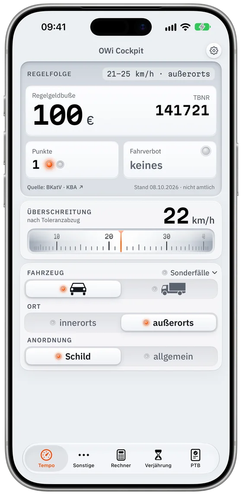

Bußgeldsachen auf einen Blick: Regelfolge, Rechtsfolgen und Verjährung in einer App.
Für Richterinnen und Richter, Anwältinnen und Anwälte, Bußgeldstellen und Betroffene.
In TestFlight testenKostenlos laden · Pro 2 Wochen kostenlos testen · iPhone ab iOS 18

Die Akte liegt vor Ihnen
Sie wollen in zwei Minuten wissen, ob die Regelfolge stimmt und ob die Sache verjährt ist. OWi Cockpit zeigt:
- Tatbestandsnummer, Regelgeldbuße, Punkte und Fahrverbot, eingestellt mit Rädern statt Suche im Katalog.
- Die Rechtsfolge bei Vorsatz, Voreintragungen und Absehen vom Fahrverbot.
- Die Verjährung als Zeitstrahl, auch nach altem Recht.
- Die Stellungnahmen der PTB zum Messgerät.
Bereiche
Tempo
Geschwindigkeitsverstöße für Pkw, Lkw und Sonderfälle, innerorts und außerorts.
SonstigePRO
Fast 300 weitere Tatbestände von Handy bis Parken.
RechnerPRO
Vorsatz, Voreintragungen und Absehen vom Fahrverbot gegen Erhöhung.
VerjährungPRO
Zeitstrahl nach § 33 OWiG mit absoluter Verjährung.
PTBPRO
Messgeräte mit den Stellungnahmen der PTB.
Quellen und Datenstand
- Tatbestände
- Bundeseinheitlicher Tatbestandskatalog des Kraftfahrt-Bundesamts, Stand 08.10.2026
- Gesetze
- StVG, OWiG und BKatV nach gesetze-im-internet.de
- Messgeräte
- Veröffentlichte Stellungnahmen der Physikalisch-Technischen Bundesanstalt
- Aktualisierung
- Mit jedem App-Update. Ohne Server, ohne Konto
OWi Cockpit ist ein Arbeitshilfsmittel. Die Angaben sind nicht amtlich und ersetzen weder die Prüfung im Einzelfall noch eine Rechtsberatung.
Wer dahinter steht
Ich arbeite seit über zehn Jahren fast täglich mit Bußgeldsachen. OWi Cockpit habe ich privat und unabhängig entwickelt. Die App ist kein Angebot einer Behörde oder eines Gerichts.
Thomas Nagel, Leverkusen
Preis
In der Testphase sind alle Bereiche kostenlos.
Abrechnung und Belege über Apple; Sammellizenzen sind derzeit nicht vorgesehen.
Datenschutz
Kein Konto, kein Tracking, keine Falldaten auf fremden Servern. Eingaben bleiben auf dem iPhone und werden nach 20 Minuten verworfen. App Store: „Keine Daten erfasst“. Datenschutzerklärung
Bußgeldsachen auf einen Blick.
In TestFlight testen